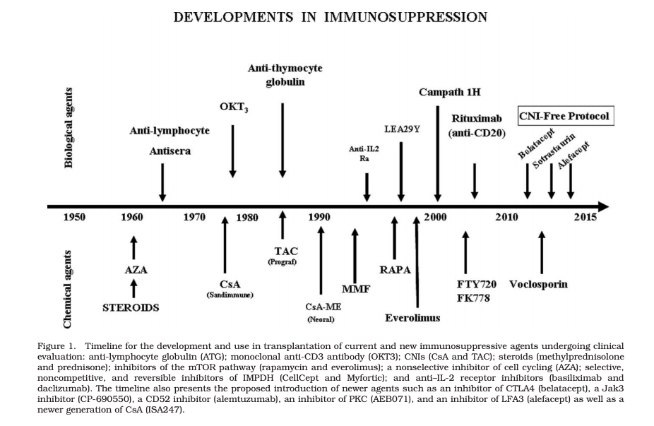
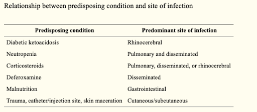

Continuing from our previous blogs
Our Earlier Blogs:
COVID 19 : FACTS & REALTY CHECK - Where I learned about this pandemic - Published on 25th March 2020
COVID 19: NETIZEN REACTIONS - Where tried to show case few examples where netizens try to forward without a fact check. - Published on 29th March 2020
COVID 19: LESSONS FROM “IN” LAND - Our Learning from Kerala - Published on 5th April 2020.
COVID 19 : MEDICAL SCIENCE TO OVERCOME PANDEMIC - My Learning on the Corona Virus on Scientific Terminology. - Published on 15th of April 2020
COVID 19: DEATHS , LOCK DOWN & RECESSION - My Opine along with little research on inter relation about the same - Published on 28th of April 2020.
COVID 19: FEAR STRESS & SUICIDE - My Opine to high light on the stress and suicide in India SubContinent - Published on 10th of May 2020
COVID 19 : TREND, FORECAST & WHEN IT ENDS!!!! - My Small Research with the available data; On Daily basis the relevant charts will be available at https://rpubs.com/arun0710/COVID19 - Published on 6th June 2020
COVID 19: THE CONCLUSION) - Closing Commentary on the learnings; Published on 11th July 2020
New Blogs:
- COVID 19: REVISITED WITH A NEW STRAIN) - Published on 8th May 2021
________________________________________________________________________________________________________
The following image is of the Mucormycosis; which is now famously known as White Fungus, Black Fungus & Yellow Fungus.

Let me run through the basic facts; By now most of you are very well aware of these as well.
Why Steroids are given for COVID Patients ?
Go through this video of Dr.Mathew Varghese which approximately 19 minutes;
Video of Dr. Mathew Varghese about COVID-19 AdministrationI have copied the below summary from the Youtube Comments who made a quick summary for people for ready reference.
Key message:Most important!!! Recall your first day of symptom (not first day tested +ve). This is the vital “Day 1”.
Phase 1) Day 1 to 5: virus + immune system war
Symptoms: low grade fever, body ache, mild cough or none at all
Don’t give medication (antibiotic does not aid virus battle; steroid will suppress immunity and prolong viral infection)
Optional health supplement
80% of people will recover by now. 20% of people take a dangerous turn…
Phase 2) Day 6 to 10: immune system attacks blood vessels in the lungs; leading to blood clot (no longer virus battle)
Symptoms: deep hacking dry cough, rising/returning fever. Note: this is not pneumonia (yet). Warning: Don’t wait for home-digital sensor to register a drop in oxygen saturation. Don’t wait until breathless. Go hospital early.
Administer steroid (5 days) and anti-coagulant (3 weeks) under medical watch. Address cytokine shower to prevent cytokine storm (will need ventilator by then).
Most patient will feel remarkably better when steroid is started, and will go on to recover.
However by day 5, fever and breathlessness may return in elderly, diabetic or weakened patients who enter into Phase 3….
Phase 3) After 5 days on steroid, suppressed immunity develop into bacteria infection. This is now pneumonia.
- Administer antibiotics and pneumonia medications
The most important takeaway from this video is that - Steroids would invite opportunistic infections which are already present in our body system; And whose immune system is compromised would take a more dangerous turn. So, Abusing Steroids will abuse our own health system or even life if it not administered under the supervision of a registered practitioner.
Also, Abusing Antibiotic usage as well would lead bacteria inside our body to become Antibiotic resistance.
Immuno Suppressants Drugs - Quick Re-Cap ?
Steroids which belong to the family of Immuno Suppressant Drugs has been prevalent over 50 years in the human history and have proved to be a life saving drugs for various risky auto-immune situations { Like Multiple Sclerosis, Psoriasis, Type 1 Diabetes, Rheumatoid Arthritis etc.; }

Primary role of the Immuno Suppresant Drugs is to target the Hyper Active components of the immune system and avoid damage of our own cells thus saving US.
Also, these drugs are as well used to in cadavers to keep organs alive which is useful for organ transplantation. Also, the same drug is given to the person who needs this organ.
What is MucorMycosis? Why it is been trending now ?
Mucormycetes, the group of fungi that cause mucormycosis, are present throughout the environment,. Mucormycosis is a very rare infection. It is caused by exposure to mucor mould which is commonly found in soil, plants, manure, and decaying fruits and vegetables. The fungi are often also found in indoor and outdoor air, in food stuffs, and in dust.
A Condition of MucorMycosis appears in different parts of the body depending upon the predisposing condition.

Most of the cases that are registered in India seemed to be of Rhino-Cerebral; So, the doctors assumed that it is because either because of early usage of Steroids or Steroid Abuse.
So accordingly, Doctors believe Mucormycosis, which has an overall mortality rate of 50%, may be being triggered by the use of steroids.
What does happens when it enters our body. Is it so deadly ?
In Majority of the cases it is assumed to have entered from air through our nose. Patients suffering from this fungal infection typically have symptoms:
stuffy and bleeding nose
swelling of and pain in the eye
drooping of eyelids; and
blurred and finally, loss of vision.
There could be black patches of skin around the nose.
It is considered to be a deadly disease because if we defect/react to these symptoms late; It might lead to removal of organs like jaws or eyes; If further delay might damage brain cells leading to death.
However, the most bright fact is that it will not be dangerous for majority of the healthy people and normal people; It will effect the people whose immune systems has been severely compromised.
What are the most important reasons for this spike now ?
As mentioned and discussed above, the prime understanding among the doctors based on the earlier data is that the abusive usage of corticosteroids will lead to this Fungal infection. Since, most of the people are having home treatment for COVID under no medico supervision there would be case of early usage or repetitive usage of them leading to a compromised immune system in our body. Since, the cases of COVID has surged due to new strain it is logical to assume for the same.
However, there are specific theories who also assume that the usage of steroids or abusive usage has happened in the past; But not have seen so many Fungal Infection Cases. { Also, we know from one of our earlier blogs that people who die in India with underlying reasons of Diabetics are approx. 2000 per day }
A recent study by kerala doctor suggests the following three reasons; { As per the study of 200 people 15% did not used steroids }
The first line of defence for Mucor is Nose. When we inhale steam excessively there is high possibility of damaging epithelial cells; Which is like a free entry for any bacteria or fungus into our body directly.
100% of the people has used Antibiotics like Azithromycin, Doxycycline which made the existing bacteria and fungal becoming resistant and got an opportunity to infect our body after few days when our immune system is compromised.
Usually, fungus thrive in zinc rich environments; Unnoticed and heavy administration of zinc supplements would also invite the fungus to grow inside our body.
A Combination of all of these things would also, lead to the severity of the case.
Conclusions:
The Thumb rule remains the same; The patient cannot be a registered doctor and prescribe himself by browsing on internet. The drugs has to be administered as per dosage levels, interval levels and for a specific duration from the onset of the disease.
It is important to note that this fungus is available on soil spores as well; When cow eats grass from the soil spores; This fungus gets into their digestive system and then finds its outward via manure; So, administrating or handling excess of this or when using steroids will be like a welcome bell.
It is as well recommended to be in hygienic environment when you are under administration of steroids.
Finally, Steam as we learnt above has to be avoided in excess; However, for many of them might not damage the epithelial cells; But certainly dehydrate the body to a large extent if done for longer times in a day.
Request to have lesser dependence on Whatsapp Forwards and depend on experienced doctor.
Also, a massive study is being conducted by Israel Scientists on Steroids for our future safety.